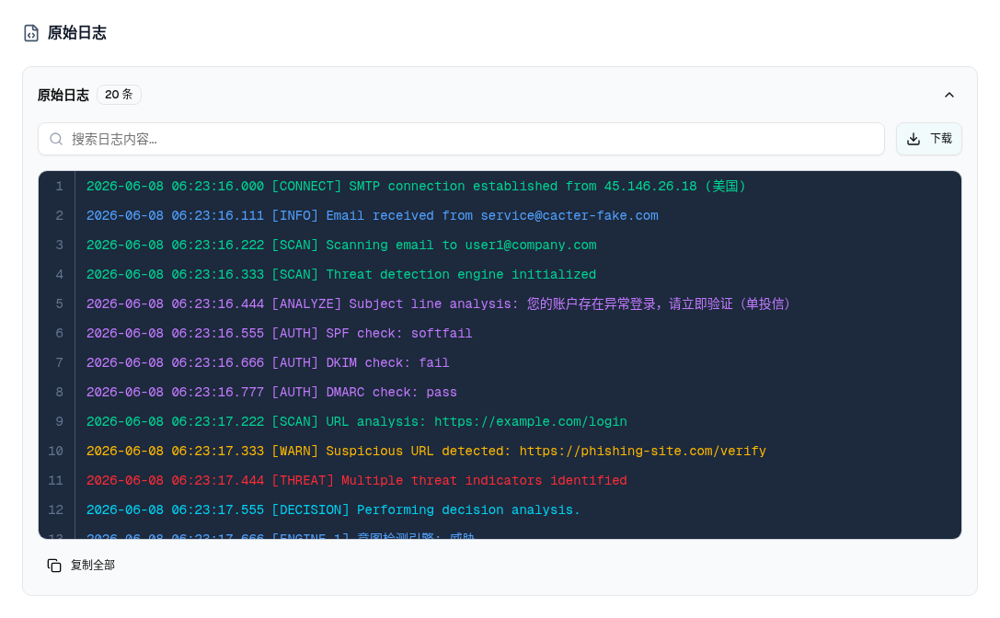

| 属性 | 值 |
|---|---|
| 所属组件 | 2.3 详情抽屉 Detail Drawer |
| 主文件 | email-handling-disposal-center/index.html |
| 触发路径 | 抽屉左导航『原始日志』 |
| 范围说明 | 「规则命中统计」不在本规格范围（见主文件说明块） |
下方内嵌为原始日志模块真实 HTML。
2026-06-08 06:23:16.000 [CONNECT] SMTP connection established from 45.146.26.18 (美国)
2026-06-08 06:23:16.111 [INFO] Email received from service@cacter-fake.com
2026-06-08 06:23:16.222 [SCAN] Scanning email to user1@company.com
2026-06-08 06:23:16.333 [SCAN] Threat detection engine initialized
2026-06-08 06:23:16.444 [ANALYZE] Subject line analysis: 您的账户存在异常登录，请立即验证（单投信）
2026-06-08 06:23:16.555 [AUTH] SPF check: softfail
2026-06-08 06:23:16.666 [AUTH] DKIM check: fail
2026-06-08 06:23:16.777 [AUTH] DMARC check: pass
2026-06-08 06:23:17.222 [SCAN] URL analysis: https://example.com/login
2026-06-08 06:23:17.333 [WARN] Suspicious URL detected: https://phishing-site.com/verify
2026-06-08 06:23:17.444 [THREAT] Multiple threat indicators identified
2026-06-08 06:23:17.555 [DECISION] Performing decision analysis.
2026-06-08 06:23:17.666 [ENGINE_1] 意图检测引擎: 威胁
2026-06-08 06:23:17.777 [ENGINE_2] 深度内容分析: 可疑
2026-06-08 06:23:17.888 [ENGINE_3] AI-URL势能检测: 钓鱼
2026-06-08 06:23:17.999 [ENGINE_4] 本地策略检查: 通过
2026-06-08 06:23:18.111 [ACTION] Email marked as malicious
2026-06-08 06:23:18.222 [ACTION] Email quarantined
2026-06-08 06:23:18.333 [ACTION] Email moved to quarantine zone
2026-06-08 06:23:18.444 [INFO] Processing completed. Total time: 558ms

| 区块 | 内容 |
|---|---|
| 折叠头 | 「原始日志」+ 条数徽（默认展开） |
| 搜索 + 下载 | Input「搜索日志内容…」（子串高亮，无正则转义）+ 下载按钮 |
| 日志区 | bg-slate-800 font-mono；行号 + [LEVEL] 着色（INFO蓝/SCAN绿/WARN琥珀/ALERT红/THREAT红…）；由 LogItem 合成（CONNECT/INFO/SCAN/AUTH/ENGINE_1-4/ACTION/DELIVER…） |
| 页脚 | 复制全部（复制过滤后行，2s 内变『已复制』）；搜索时右侧「找到 X / Y 条记录」 |
| 空态 | 仅搜索无匹配时「没有匹配的日志记录」 |
复制=过滤后行、下载=全部行（不一致，见主文件 §7-D10）；PRD 要求 3 语言/语法高亮/1 万行上限，demo 未达。
| 比对项 | demo 实际 DOM | 嵌入的 HTML | 一致 |
|---|---|---|---|
| 模块容器 | #section-rawlogs | 一致 | ✅ |
| 日志条数 | 20 条（inv-16 合成） | 一致 | ✅ |
| 级别着色 | 按 [LEVEL] 正则着色 | 一致 | ✅ |
| 数据性质 | 100% Mock 合成 | 与源码一致 | ✅（见主文件 §7-D10） |